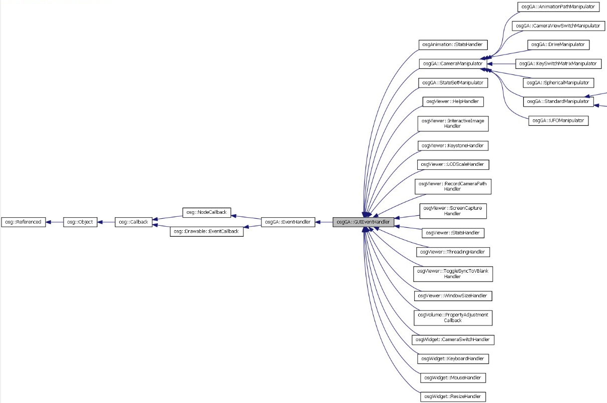
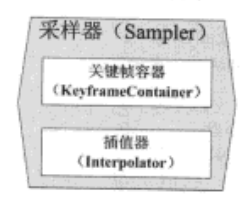

Wed Aug 11 2021 01:00:05 GMT+0800
osgViewer 库包含了一系列用于控制视口显示的相关类，并封装了大量用户常用的功能函数，例如显示管理、事件响应、场景渲染等；提供了对 DatabasePager 的支持；还可以针对同一场景图形，提供并通过多个独立的视口显示该场景。
osgViewer 库使用 osgCamera 类来管理 OpenGL 的模型-视图矩阵。另外还包含 SimpleViewer、Viewer 和 CompositeViewer 三个视口类。
Viewer 类在内部创建了一个 osg::Camera 摄像机对象来管理 OSG 的模型-视图矩阵，用户可以通过以下方法来控制 Camera 对象：
将摄像机操作器关联到 Viewer 中。默认状态下 Viewer::run()将自动创建一个 osgGA::TrackballManipulator 对象来控制摄像机。osgGA 库定义了一些常用的控制器类，用户可以调用 Viewer::setCameraManipulator()来指定一个期望的控制器；
设置 Camera 对象的投影矩阵和观察矩阵为自定义的矩阵值，可以保证用户程序能够完全控制视口的浏览动作。可以在 while 循环中执行以下操作：
1 | while( !viewer.done() ) |
上述两个操作是互斥的，如果直接设置 Camera 对象的矩阵值，就不能使用 Viewer::run()函数，因为该函数不允许每帧都实时改变视口的参数。
除了设置视口外，Viewer 类的 Camera 对象还提供了设置清屏颜色、清除深度缓存的颜色缓存的方法：
1 | viewer.getCamera()->setClearColor( osg::Vec4() ); |
上面的代码设置设置了清屏的颜色，并清除了颜色、深度和模板缓存。
SimpleViewer 类不会主动创建窗口或者设备的上下文，需要用户程序来创建窗口和设备上下文。用于将已有的程序移植到 OSG 环境中，是一个可以和现有程序框架相配合的简单的视口类。
Viewer 类只能在一个场景中添加一个视口（也可以使用一组摄像机拼接一个视口，用于支持多通道渲染），CompositeViewer 类可以支持一个或多个场景的多个视口显示，并允许用户程序指定渲染顺序。
CompositeViewer 可以支持渲染到纹理（render-to-texture, RTT）的操作，即允许用户程序将一个视口中渲染的图像作为另一个视口的纹理贴图。
OSG 允许用户对场景进数据行动态修改。OSG 在拣选（cull）遍历中关联了渲染图形中的几何数据和渲染状态信息，它们将在绘制（draw）遍历中进行处理。osgViewer 库支持多线程模式，每一个线程均独立地运行拣选及绘制遍历。出于性能优化考虑，OSG 并没有为了线程的安全性增设内存锁，而是要求用户程序在拣选以及绘制遍历之外的时间对场景图形进行修改。
有几种方法可以确保用户的修改不会与拣选以及绘制线程发生冲突。最容易想到的方法是在 Viewer::frame()调用时添加锁，禁止加锁时对场景图形进行修改，但这需要在主渲染循环中添加额外代码。如果希望程序更加整洁和规范的话，可以选择在更新遍历中进行场景的修改。
osgViewer 支持的多线程模型允许用户程序主循环不必等到绘制遍历结束就可以继续运行，即上一帧画面的 Viewer::frame()方法可能与下一帧的更新遍历产生重叠。在开发动态场景图形时，此类问题容易造成系统崩溃。
OSG 提供了 osg::Object::DataVariance()方法用于解决这一问题。初始状态下，Object 对象的数据变度是 UNSPECIFIED。用户可以调用 Object 对象的 setDataVariance()方法将数据变度修改为 STATIC 或 DYNAMIC。OSG 将确保绘制遍历在所有的 DYNAMIC 节点和数据处理完之后才会返回。
例如，静态场景中根节点有两个叶子节点：一个坐标变换之后保持静止，一个保持旋转。此时应该将根节点和保持静止的 MatrixTransform 节点设置为 STATIC，把旋转的物体设置为 DYNAMIC。
1 | graph TD |
OSG 中可以设置更新回调和事件回调，事件回调发生于键盘、鼠标、窗口等交互过程中，更新回调发生于每一帧的系统遍历过程中。
其中更新回调允许用户设置 Node 和 Drawable 对象的回调类。Node 可以在执行 ==更新和拣选== 遍历时进行更新回调，而 Drawable 可以在==拣选和绘制==遍历时进行更新回调。通常在更新遍历中使用 osg::NodeCallback 接口对 Node 进行动态修改。
回调基类 NodeCallback 接口的使用方法如下：
在每个更新遍历过程中，都会调用派生类中的 operator()方法，从而允许用户程序对 Node 进行修改。
OSG 向 operator()方法传递了两个参数：
示例代码如下：
1 | class RotateCB : public osg::NodeCallback |
NodeCallback 类间接继承自 Referenced，用户程序不需要维护 RotateCB 指针，Node 类内部维护了一个更新回调的 ref_ptr<> 指针列表（设置多个回调用 addUpdateCallback），当 RotateCB 的引用计数减为 0 时将自动释放。
1 | graph TD |
EventCallback 也派生自 NodeCallback，例如，可以给相机添加一个事件回调：viewer->getCamera()->setEventCallback(); 在事件回调中可以处理键盘或鼠标事件。类似于向 viewer 中添加 EventHandler。
NodeVisitro 类是 OSG 对于访问器设计思想的具体实现。从本质上说，NodeVisitor 类遍历了一个场景图形并为每一个被访问节点调用特定的函数。这一技术是许多操作的基类，例如：osgUtil::Optimizer, osgUtil 库中的几何处理类；文件输出类。其中如前所述，OSG 使用 osgUtil::UpdateVisitor 类（继承自 NodeVisitor）来实现更新遍历。
NodeVisitor 类是一个基类，用户程序无法直接实例化。可以使用提供的任何 NodeVisitor 派生类，也可以使用自己编写的继承自 NodeVisitor 类的代码。
NodeVisitor 类包含了一些经过重载的 apply()方法，其输入参数涵盖了大部分 OSG 的节点类型。当一个 NodeVisitor 对象遍历整个场景图形时，它将会为每个被访问的节点调用其相应的 apply()方法。
OSG 中 NodeVisitor 类采用==访问器==这一设计模式实现：每一种数据元素节点都可以通过 accept()方法调用访问器；访问器则通过 apply()方法获取传入的节点对象，并执行所需的节点操作。上述过程被称为“双重派发”。
1 | void Node::accept(NodeVisitor& nv) |
缺省情况下，NodeVisitor 基类禁止执行遍历。因此在派生类中，需要使用枚举量 NodeVisitor::TRAVERSE_ALL_CHILDREN 来初始化基类，以允许执行遍历。否则，OSG 将不会调用用户的 apply()方法。示例代码如下：
1 | class FindNamedNode : public osg::NodeVisitor |
在应用程序中遍历整个场景图形时，可以将 NodeVisitor 作为 Node::accept()的输入参数传递。用户可以在任何一个节点上调用 accept()， NodeVisitor 将从那个节点开始遍历整个场景图形。也可以从根节点调用 accept()，对整个场景图形进行搜索。
OSG 主要使用 osgGA 库来处理用户交互，GA 的全称是 GUI Abstraction。
GUIEventAdapter 类是不同操作系统底层交互事件与 OSG 交互事件的适配接口。其中定义了很多枚举值，表示了常见视窗操作系统中的鼠标、键盘、触摸板的操作。
交互事件类型可以使用 getEventType() 获取；键盘按键值可以进一步使用 getKey() 获取，鼠标的位置可以进一步使用 getX()、getY()、getXnormalized()、getYnormalized() 获取，前者返回实际的窗口坐标，后者返回以窗口中心点为[0,0]，规范至[-1,1]的鼠标坐标。
GUIActionAdapter 类用于适配 OSG 应用程序向不同操作系统传递的动作请求，该类的内容较为简单。
对于所有传递给场景的键盘、鼠标等输入设备时间，可以使用 EventQueue 来记录，并使用 GUIEventHandler 及其派生类将事件传递给用户进行处理。
EventQueue 类可以理解为一个交互事件的集合，它保存了一个 GUIEventAdapter 队列，并提供了向队列新增元素的方法。
GUIEventHandler 是 OSG 键盘和鼠标交互事件的处理终端，GUIEventHandler 提供了可扩展的虚函数 handle()，通过类的派生和重构，即可实现用户自定义的交互事件处理工具。

osgGA 中还提供了新的访问器 osgGA::EventVisitor 类，它作为场景访问的主要执行者，负责区分和调用各个节点、可绘制体以及渲染状态集的事件回调对象。
GUIEventHandler 类派生自节点回调类 NodeCallback 和可绘制体回调类 Drawable::EventCallback，因此它可以作为回调对象，使用 Node::setEventCallback 或者 Drawable::setEventCallback 设置给场景中的节点或可绘制体。回调的执行操作符 operator() 或者 event() 函数则会自动判断当前访问器是否为事件访问器 EventVisitor。若 handle 函数返回 true，则事件处理完毕，不会继续被其它事件处理器处理。
在 OSG 场景中，用户与场景的主要交互方式有相机漫游和物体操控两种，分别可用漫游器和拖曳器实现。
通过 Viewer 对象的 setCameraManipulator 可以为视景器设置不同的漫游器。OSG 中的漫游器种类很多，主要有以下几种：
| 漫游器名称 | 特点 |
|---|---|
| osgGA::TrackballManipulator | 轨迹球漫游器主要处理鼠标交互下视觉运动的平滑和准确性，不考虑物理规律 |
| DriveManipulator、FlightManipulator 和 UFOManipulator | 用于模拟操纵交通工具时的漫游效果 |
| AnimationPathManipulator | 沿固定路径的动态漫游 |
| NodeTrackerManipulator | 跟随场景中的物体进行漫游 |
| CameraViewManipulator | 可以切换相机视角的漫游器工具 |
| KeySwitchMatrixManipulator | 可以进行多个漫游器切换 |
| TerrainManipulator | 用于在大规模地形上进行浏览的漫游器 |
拖曳器（Dragger）的目的是通过操控模型的 MatrixTransform 父节点来实现操控模型的外观。为了将拖曳器与模型分离，OSG 中使用了命令设计模式进行了封装，拖曳相关的类有：osgManipulator::MotionCommand 类、osgManipulator::CommandManager 类。
命令类 MotionCommand 类可用于命令的执行、管理命令的作用对象、获取命令的执行阶段等。CommandManager 类主要用于绑定拖曳器及其作用对象，一个拖曳器可以同时绑定操控多个对象。
使用拖曳器的具体流程如下：
大多数的 3D 程序都需要某种形式的用户选择功能，终端用户可以交互地选择当前画面的某部分。用户选择的最简单形式为：用户将鼠标移动到场景中特定的位置，并点击鼠标；程序内部进行运算，将 2D 的鼠标 XY 坐标位置映射到正确的 3D 场景图形节点上，并保存节点地址以便将来使用。
从本质上说，OSG 程序通过两个步骤来实现用户选择：
在 OSG 中，osgGA::TrackballManipulator 可以实现视口矩阵的控制。TrackballManipulator 将鼠标事件作为输入，用于控制用户视口的 osg::Camera 视口矩阵。TrackballManipulator 派生自 osgGA::GUIEventHandler 类。GUIEventHandler 是虚基类，无法直接被实例化，用户程序可以从 GUIEventHandler 派生自己的类，以实现各种基于 GUI 事件的操作。
例如要实现鼠标控制的选择操作，可以从 GUIEventHandler 派生新的类并重载 GUIEventHandler::handle() 方法，以接收鼠标事件；在程序中创建新类的实例并将其关联到应用程序的观察视口。handle()方法有两个输入参数：osgGA::GUIEventAdapter 和 osgGA::GUIActionAdapter。
在渲染视口之前，用户往往创建一个 GUIEventHandler 派生类的实例，并使用 Viewer::addEventHandler()方法将其关联到视口，一个视口可以有多个事件器，Viewer 类将 GUIEventHandler 对象添加到一个事件处理器列表中。程序运行时 Viewer 将调用每个 GUI 事件处理器的 handle()函数，直到其中一个的 handle()函数返回 true 为止。若用户返回 false，则将对其它事件处理器进行继续扫描。
1 | class PickHandler:public osgGA::GUIEventHandler |
所以，要实现接收鼠标事件并实现用户选择的功能，需要经过以下步骤：
上述方法并不局限于使用鼠标进行选择。用户程序可以尝试实现与 TrackballManipulator 类相似的接收鼠标事件的类，可以接收键盘事件并实现对按键的响应操作。
可以将通过点击鼠标进行节点选择想象成是从鼠标光标位置向场景中发射了一条射线。被鼠标选中的场景部分将与射线有一个交集。如果场景是由线和点元素组成的，那么射线的交运算可能无法符合用户的实际选择，因为鼠标的位置几乎无法与这些图元产生精确的空间交集。此外，在典型的透视渲染中，射线交运算的精度将与观察者所处的距离成反比。
OSG 使用一种名为多胞体（polytopo）的金字塔形包围盒代替射线，以克服上述问题。这种金字塔形的顶峰位于视点，中心轴直接穿过鼠标光标的位置。它距离视点的宽度是由视场和程序控制的参数决定的。
OSG 使用场景图形的自顶向下的继承结构，从而避免了 OpenGL 普遍存在的“迟钝”的选择特性，而在本地 CPU 上进行高效的计算。osgUtil::IntersectionVisitor 类继承自 NodeVisitor，它可以检测每个定点的包围盒与交集包围盒的关系，并允许在某个子图形不可能存在有交集的子节点时，跳过该子图形的遍历。
用户可以设置 IntersectionVisitor 类并使用几种不同的几何结构进行交集检测，例如平面和线段。其构造函数使用 osgUtil::Intersector 作为输入参数，Intersector 类定义了选择操作的几何体并执行实际的交集测试。
Intersector 是一个纯虚基类，用户程序无法将其实例化，而 osgUtil 库从 Intersector 派生了一些代表不同几何结构的新类，例如 osgUtil::PolytopeIntersector，也就是前文所述的、较为理想的鼠标点选判定模型。
有些程序需要拾取单独的顶点和多边形；而有些程序只需要简单地获取那些包含了被选节点的 Group 或 Transform 父节点。IntersectionVisitor 返回的 osg::NodePath 对象满足了这些要求。NodePath 是一个 std::vector< osg::Node > 向量，它表示沿着从根节点到叶节点的、呈现一定排列层次的节点路线。如果用户程序需要获取中间的 Group 组节点，只需要从后向前搜索满足程序要求的节点即可。
综上所述，要实现 OSG 中的鼠标选择操作，需要按照如下的步骤编写代码：
OSG 中可以绘制 2D 文字和 3D 文字。二维文字的表达工具为 osgText::Text 类，它派生自 osg::Drawable 类，对 drawImplementation() 进行了重构；三维文字使用 osgText::Text3D 类进行表达，Text3D 类多了 setCharacterDepth() 函数。示例代码如下：
1 | osg::ref_ptr<osgText::Text3D> text = new osgText::Text3D; |
为了能够显示世界各国的语言文字的编码的储存需求，在 ASCII 码表的基础上衍生出了许多字符编码格式：
| 字符编码名称 | 编码内容 |
|---|---|
| GB2312 | 由中国国家标准总局于 1980 年颁布，采用双字节表达一个字符。共收录 6763 个汉字字符和 682 个其他语种字符，基本涵盖了中国大陆语言文字。 |
| BIG5 | 大五码，是繁体中文汉字编码的早期通用标准。采用双字节表达一个字符，共收录了 13060 个中文字符，主要应用于中国台湾、香港等地区。 |
| GB18030 | 由中国国家标准总局于 2000 年颁布。使用单字节、双字节和四字节 3 种变长编码格式表达字符编码，共收录了 70244 个汉字字符和大量其他语种字符，是目前最为全面的汉字编码方案。 |
| Unicode（UCS） | 由国际组织制定的可以容纳世界上所有文字和符号的字符编码方案。 |
| UTF | 是 Unicode 编码到程序数据的转换方式（ UCS Transformtion Format ），常见的转换方式包括 UTF-8、UTF-16 等。 |
为了使程序语言除了 ASCII 字符外能支持上述字符，C/C++ 语言中定义了“多字节字符”和“宽字符”的概念。多字节字符的字节数目可能不等，进行文本处理较为困难，适用于将文字存储为文件。宽字符类型（ wchar_t ）的一个值就代表一个 Unicode 字符，更利于对字符串进行统一的处理和操作。
在 OSG 中，osgText::String 类提供了 Unicode 编码的保存和显示功能，具体使用方法如下：
1 | //设置为中国本地的编码格式 |
1 | //把参数 str 所指向的多字节字符的字符串转换为参数 pwcs 所指向的数组。 |
在 OSG 中使用单独的 osgAnimation 库定义了一系列场景动画的相关功能类。构建场景对象动画的过程可以理解为定义和记录关键帧，以及在运行时自动计算中间帧并赋予物体的过程。用户自定义 osg::AnimationUpdateCallback 类，通过注册和使用更新回调来实现动画更新。用户还可以仅仅通过路径关键点来创建一些简单的路径动画。
关键帧是场景中角色或物体运动中关键动作所处的那一帧；关键帧之间的帧通过计算自动插值生成，称为过渡帧或中间帧，常见的插值方法有线性插值、球面线性插值和三次贝塞尔曲线插值；保存所需的关键帧，用于计算中间帧的工具称为采样器。

关键帧容器派生自 std::vector，是一个模板类。一个关键帧容器只能容纳一种类型的关键帧；一个采样器必须使用同一种类型的关键帧容器和插值器。动画频道提供了一种集中管理采样器和动画对象的接口。
在有的场景中需要对多个动画效果进行混合。例如，一辆汽车行驶过程中撞到了物体，然后在空中翻滚前进。上述过程中需要分别建立平移动画（vec3）和旋转动画（Quat 四元数），这些动画根据关键帧类型不同，各自需要一个频道表示。osgAnimation 库中的 Animation 类就提供了这些功能。
动画的播放方式有 4 种：
| 播放方式 | 播放效果 |
|---|---|
| ONCE | 播放一次之后停止 |
| STAY | 播放完毕后停留在最后一帧 |
| LOOP | 正向循环播放 |
| PPONG | 正反往复播放，类似乒乓球 |
骨骼动画也称角色动画，主要用于表达生物或非生物体的感情和行为。角色的每个部件都被称为骨骼（Bone），连接骨骼的对象被称为关节（Joint），所有骨骼和关节的集合被称为骨架系统（Skeleton）。
osgAnimation 中使用派生自 Transform 的 Skeleton 和 Bone 来表达骨骼结构，其中 Skeleton 作为角色的根节点，需要承担更多的任务，是 Bone 的派生类。骨骼中每增加一个 Bone 就会自动增加一个动画更新回调。
变形体动画（Morph Target Animation）又被称为逐顶点动画，是另一种常见的三维动画表现形式。它记录了一系列顶点位置的坐标和偏移，并在动画运行的每一帧中将顶点移动到新的位置，形成持续、平滑的运动效果。
变形体动画可以精确地表达一个物体，尤其是自然界中生物体的运动和变形过程。物体中定义的可变化顶点数越多，变形体动画就会越复杂，对计算机运算资源的消耗也越大，通常每帧中以 4000-9000 个顶点的位置变化为宜。
osgAnimation::MorphGeometry 类用于表达变形体动画，它继承自 osg::Geometry 类，采用 VBO 方式完成顶点数据的动态刷新。MorphGeometry 类使用构造函数传入原始几何体，并使用 addMorphTarget 函数来添加一个或多个变化目标，存在多个变化目标时，将依据它们的权重来影响变形的结果。最终还需要添加一个 UpdateMorph 动画回调来实现变形体动画的更新过程。
渐进动画用于辅助为动画过程提供渐进加速或减速的效果，使动画效果更逼近物理世界。渐进动画处理器不受 osgAnimation 动画管理器的约束，也不存在回调函数，用户可以其它回调函数中定义并使用渐进动画处理器。可以在回调函数中加入以下代码，以获取渐进效果：
1 | osg::ref_ptr<osgAnimation::InOutCubicMotion> _motion = |
纹理动画的基本原理是动态切换当前显示的图片，借助视觉暂留现象来实现连续播放的效果。OSG 中提供了 osg::ImageSequence 类用于播放纹理动画，首先预加载一系列纹理图片，然后在指定的时刻动态改变显示的图片，进而影响模型中物体所绑定的纹理对象，实现动画效果。现在，纹理动画通常被着色器代替。
在 OSG 中，名字空间 osgPartible 内的类用来模拟粒子系统。osgParticle 采用 Billboard 和色彩融合技术生成粒子，能够高效地模拟粒子系统，生成非常真实的效果。
构成一个粒子系统，需要以下模块：
1 | graph TD |
在 OSG 中已经定义了一些常见的特效模块，如 osgParticle :: ExplosionDebrisEffect（爆炸碎片）、osgParticle :: ExplosionEffect（爆炸模拟）、osgParticle :: SmokeEffect（烟雾模拟）、osgParticle::FireEffect（火光模拟）以及 osgParticle::PrecipitationEffect（雨雪模拟）。
存在两种使用粒子系统方式，一种是 OSG 自定义好的粒子系统，另一种是自定义粒子系统。
预定义粒子系统的使用过程如下：
自定义粒子系统的使用过程如下：
凹凸贴图特效可以创建一个凹凸不平的表面效果，需要使用普通漫反射纹理和法线贴图（可以使用 nVIDIA 的法线贴图生成器制作）两种纹理来创建。
此外，还需要创建正切空间的基向量并将其关联到每个几何体上（这一步骤可以调用 BumpMapping::prepareChildren 方法来完成），Geometry 对象的漫反射颜色和法线贴图纹理都必须提前定义好对应的 UV 贴图。
刻线特效（osgFX::Scribe）是一个双通道的特效，第一个通道以通常的方式渲染图形，第二个通道使用线框模式。用户设置好光照和材质之后，即可使用指定的颜色进行渲染。这个特效使用了 PolygonOffset 渲染属性类来避免多边形深度冲突（Z-fighting）的斑驳现象。
刻线特效的使用非常简单：
1 | osg::ref_ptr<osgFX::Scribe> sc = new osgFX::Scribe( ); |
DOFTransform 类是对 Multigen 中 DOF 操作的一个封装，主要用于机械仿真中的机械运动控制，如履带的运动和机器手臂的运动等。